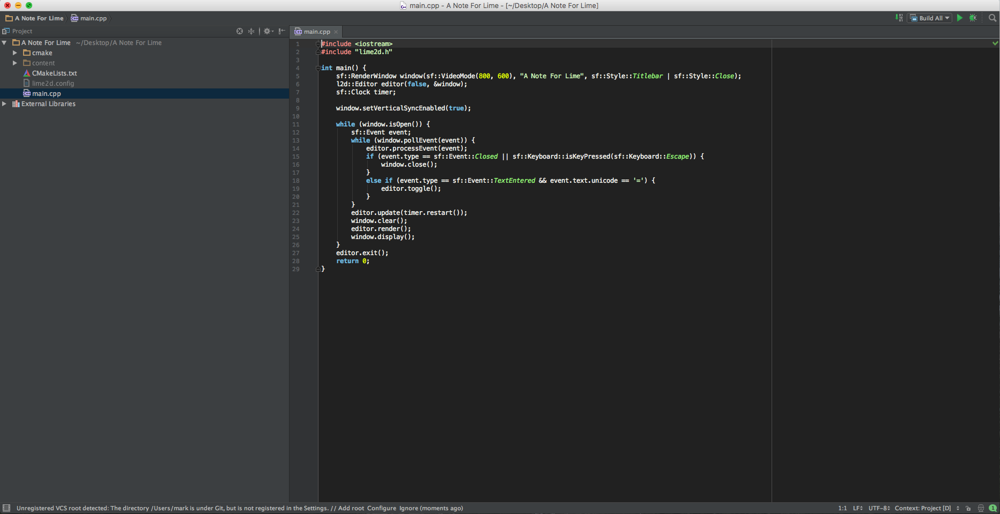
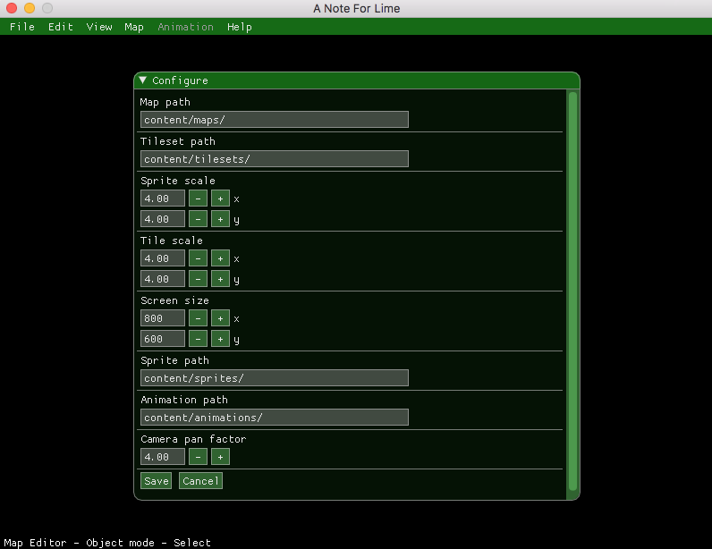

Lime2D Setup Guide
If you're reading this guide, then you must be interested in getting Lime2D working in your C++ project.
I'll take you through setting up Lime2D step-by-step so that you can start making your game.
Prerequisites
Make sure you have the following downloaded before following this guide. I'll go through where to put everything in the next section:- Lime2D
- The Lime2D Project Template
- Something to write and compile C++ code with (IDE, text editor with separate compiler, etc). I will be using JetBrains CLion throughout the guide.
- SFML, preferably the newest version (2.4.0), downloaded
- Lua
Installing everything
Start by installing / extracting SFML and Lua to any folder.I highly recommend you install them to C:/SFML-2.4.0/ and C:/Lua if you are Windows, or ~/Library/Frameworks if you are on a Mac. If you do this, you won't need to change anything in the FindSFML.cmake and FindLua.cmake files later on.
Put the Lime2D folder either in C:/Libs/Lime2D or ~/Library/Frameworks/Lime2D, depending on your operating system.
Setting up the project
- Extract the Project folder from the Lime2D Project Template zip file you downloaded before. Rename the Project folder to the name of your game.
- Start up your IDE (preferably CLion as mentioned above) and open the Lime2D Project Template.
You should see something like this:
 - Open CMakeLists.txt and change the project name to your project's name on Line 2.
- Run CMake on your project and see if there are any errors.
- If your SFML / Lua / Lime2D installations are not being found by CMake, edit the .cmake files in the cmake folder to check the paths where you installed the libraries.
- If you are on Windows, put the .dll files from SFML in the Debug/Release folders for your project.
- In your IDE, set your working directory to the root of the project.
Running Lime2D
If all of the above steps were completed successfully, you should now be able to compile the test program that is provided with the Lime2D Template Project. When you run it, you should probably see a blank black screen.Press the '=' (Equals) key on your keyboard to enable Lime2D. If you want to change the key that toggles Lime2D, go into main.cpp and change the event key check to whichever key you'd like.
If a green menu appeared across the top of your window, then it worked! You can now click File -> Configure and set up Lime2D.

If you have any questions, please post them below and I would be glad to answer them. Enjoy!